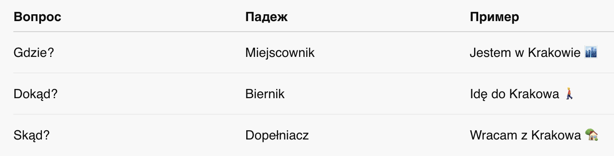

Javier marzył o podróżach weekendowych po Polsce. Niestety ani on, ani reszta grupy nie wie,
dokąd mogą pojechać. Dlatego mają warsztaty gegraficzne i nietypowe zadanie domowe: zrobić plan
wycieczki na weeekend. Najepszy projekt będzie zrealizowany!
Rzeczpospolita Polska (RP) leży w Europie Środkowej. Graniczy z Niemcami na zachodzie,
Czechami i Słowacją na południu, Ukrainą i Białorusią na wschodzie, z Litwą i z Rosją na
północy. Polska to duży kraj - dziewiąty w Europie pod względem wielkości terytorium.
Stolica Polski to Warszawa – centrum polityczne kraju. Tam mieszka Prezydent RP, tam
jest parlament i inne ważne instytucje. Symbolem Warszawy jest syrena.
Polska leży nad Morzem Bałtyckim, do którego wpływa Wisła, najdłuższa polska rzeka. Na
północnym zachodzie na Bałtyku leżą wyspy Uznam i Wolin. Na południu Polski znajdują się
góry: bardzo turystyczne Tatry z Zakopanem, ale też mniej popularne Beskidy oraz Sudety
na południowym zachodzie i Bieszczady na południowym wschodzie. Na północnym wschodzie
leży piękny region, Mazury: „Kraina tysiąca jezior” i zielonych lasów.
KIERUNKI GEOGRAFICZNE
Morskie Oko
największe jezioro tatrzańskie o krystalicznie czystej wodzie. Według legendy ma podziemne
połączenie z Adriatykiem – stąd nazwa. Powyżej jeziora stoi schronisko – jedno z
najstarszych i najpiękniejszych. Czerwony szlak idzie na Rysy (2499 m n.p.m. – nad poziomem
morza) – najwyższy szczyt polskich Tatr.
Wieliczka
ta kopalnia soli to jedyny obiekt górniczy na
świecie czynny bez przerwy od średniowiecza do dzisiaj. Znaną na całym świecie podziemną
Trasę Turystyczną zwiedza około miliona
turystów rocznie. Warto zobaczyć np. (na przykład) kaplicę świętej Kingi, patronki kopalni.
Stoi tam też jedyny na świecie pomnik Jana Pawła II (drugiego) wykuty w
soli.
Spływ Dunajcem
kanon atrakcji turystycznych: zwiedzić Polskę i nie spłynąć przełomem tej malowniczej rzeki
to tak jak być w Egipcie i nie odbyć rejsu po Nilu. Przełom ma jedną wielką zaletę – można
go oglądać płynąc meandrującą rzeką (tradycyjną tratwą z góralami, kajakiem lub pontonem)
albo idąc czy też jadąc na rowerze wzdłuż rzeki po słowackiej stronie.
Zamość
„Padwa Północy” lub „Miasto Arkad”
, w którym
w pełni zachował się jego renesansowy układ
urbanistyczny. Na Rynku, który miał pełnić
funkcje reprezentacyjne, a nie handlowe, stoi
ratusz i piękne arkadowe kamienice.
Najładniejsze – z kolorowymi fasadami –
wybudowali kupcy ormiańscy. Dawniej
mieszkało tu co najmniej dziesięć różnych
narodowości, w tym wielu Żydów.
Malbork
zamek wielkich mistrzów krzyżackich z XIV-XV
wieku otoczony murami obronnymi,
składający się z trzech części. Jeden z
największych zachowanych kompleksów
gotyckiej architektury na świecie. Kiedyś do
zamku wchodziło się przez 14 bram i cztery
mosty, a zamek posiadał wszystkie znane
wtedy elementy obronne.
Toruń
to stare miasto pomorskie ma łącznie 1100
budynków wpisanych do rejestru zabytków, z
czego prawie połowa to średniowieczne
gotyckie budowle z czerwonej cegły, np.
zespół gotyckich kamienic, m.in. (między
innymi) Dom Kopernika, ratusz, ruiny zamku
krzyżackiego, mury miejskie, gotycki most,
kilka wież (m.in. Krzywa Wieża).
Kanał Elbląski
żeglowna droga wodna i jedyny taki projekt
hydrotechniczny na świecie. Różnica
poziomów to ok. (około) 100 metrów, a
żegluga białej floty jest możliwa dzięki
systemowi specjalnych platform ciągniętych
po szynach mechanizmami linowymi
napędzanymi przez wodę. Wybudowany w
połowie XIX wieku miał połączyć szlakiem
żeglownym Prusy Wschodnie z Bałtykiem.
Puszcza Białowieska
ogromny kompleks leśny. Leży po obu
stronach granicy polsko-białoruskiej i jest
ostatnim tak wielkim naturalnym lasem.
Mieszkają tu żubry, „polskie bizony”
, które są wizytówką rezerwatu. Rośnie także tutaj
aromatyczna trawa dodawana do znanej
polskiej wódki „Żubrówki”.
bilet ulgowy - bilet ze zniżką dla studentów, emerytów itd. (itd. = i tak dalej)
bilet tam i z powrotem - bilet w obie strony
pociąg osobowy - zwykle lokalny, bardzo wolny pociąg
pociąg pospieszny - szybki pociąg, ale bez rezerwacji miejsc
Intercity - bardzo szybki pociąg, z rezerwacją miejsc
pociąg bezpośredni - jednym pociągiem na miejsce
przesiadka - zmiana jednego pociągu na
drugi pociąg
wagon - jedzie za lokomotywą
przedział - ,,pokój'' w wagonie
miejscówka - rezerwacja miejsca siedzącego
Dialog 2
Mami planuje wycieczkę do Torunia i być może do Malborka. Idzie na dworzec PKP,
żeby dowiedzieć się, jak tam dojechać.
MAMI:
Dzień dobry. Przepraszam, o której godzinie odjeżdża pociąg z Krakowa do Torunia? Chcemy
jechać w piątek po południu.
Informacja: Niestety, nie ma stuk bezpośredniego połączenia.
To znaczy, że najpierw trzeba jechać Intercity do Warszawy o 14:00, a potem pospiesznym
do Torunia. Na przesiadkę jest kwadrans.
MAMI: O której będziemy na miejscu?
Informacja: O 19:42.
MAMI:
Może być, nie za późno. A ile kosztuje bilet? Jesteśmy studentami, ale obcokrajowcami i
nie wiem czy możemy kupić bilet ulgowy.
Informacja: Niestety nie. A o cenę proszę pytać w kasie.
Dialog 3
KASA:
Słucham?
MAMI:
Przepraszam, ile kosztuje bilet normalny do Torunia przez Warszawę?
KASA: Która klasa?
MAMI: Druga.
KASA:
Intercity Kraków Główny – Warszawa Centralna z miejscówką kosztuje 107 złotych,
pospieszny Warszawa – Toruń 42 złote.
Angela: Po co poszłaś na dworzec? Jedziesz dokądś?
Mami:
Nie, pytałam tylko jak dojechać do Torunia.
Angela: Marzy ci się weekend w Toruniu? E, w mieście jest zawsze
tak samo. Ja wolałabym jechać do puszczy, natura, las, zwierzęta i tak dalej. Absolutnie nie
do miasta!
Mami:
Ale w Toruniu nigdy nie byłam, a naturę wolę oglądać w telewizji.
Angela: A wiesz, że Javier chce jeszcze raz jechać w Tatry?
Romantyczny weekend w Tatrach z Javierem, w Zakopanem…
Mami:
Skąd wiesz?
Angela: Bo właśnie wszyscy spacerujemy nad Wisłą i rozmawiamy o
tej wycieczce. Przyjedź, co?
Mami:
A jak dojadę z dworca nad Wisłę?
PRZYIMKI DYNAMICZNE
Что такое динамические предлоги в польском?
Это предлоги, которые отвечают не просто на вопрос «где?», а показывают НАПРАВЛЕНИЕ движения или
ОТКУДА что-то происходит.
💡 Они идут вместе с глаголами движения: идти, ехать, возвращаться и т.п.
Три важных вопроса:
Gdzie? (Где?) — Я уже где-то нахожусь.
Dokąd? (Куда?) — Я куда-то иду или еду.
Skąd? (Откуда?) — Я откуда-то возвращаюсь.
Схема падежей с предлогами:

Популярные предлоги и как они работают:
Na (на)
Na + Biernik — Куда?
Idę na pocztę. (Иду на почту)
Na + Miejscownik — Где?
Jestem na poczcie. (Я на почте)
Z + Dopełniacz — Откуда?
Wracam z poczty. (Возвращаюсь с почты)
W (в)
W + Biernik — Куда?
Jadę w góry. (Еду в горы 🏞️)
W + Miejscownik — Где?
Jestem w górach. (Я в горах)
Z + Dopełniacz — Откуда?
Wracam z gór. (Возвращаюсь с гор)
Nad (над) / Pod (под) / Przed (перед) / Za (за)
Работают так же:
Dokąd? — Biernik
Gdzie? — Narzędnik
Skąd? — Dopełniacz
Форма ze:
Пишем ze, если после предлога z идёт слово, начинающееся с нескольких согласных подряд.